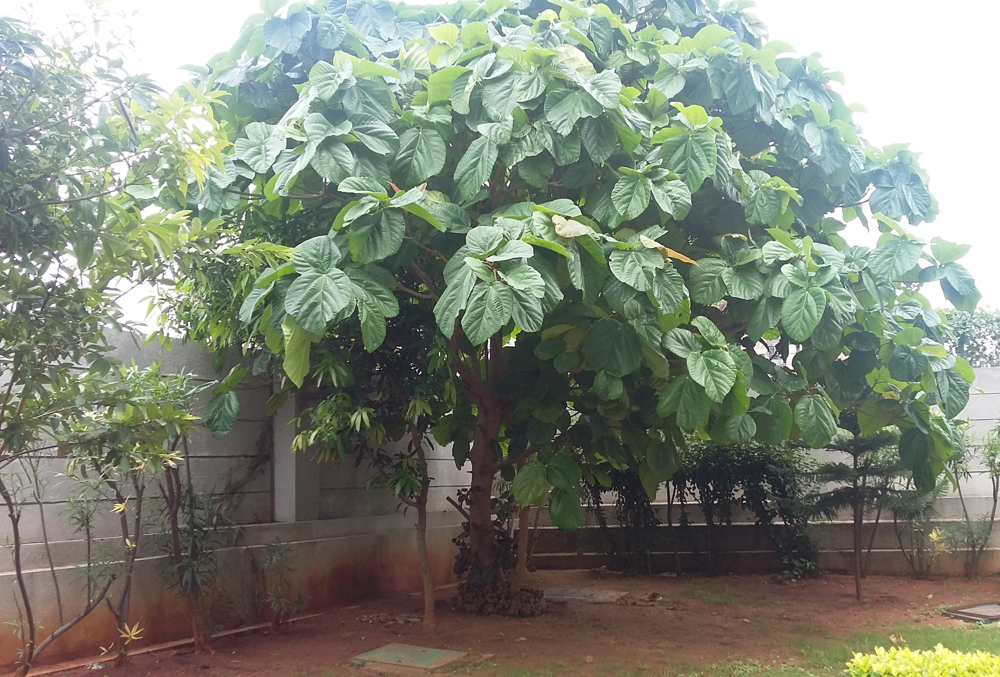

Elephant ear tree is also called yam,taro.
Scientific name is ALOCASIA ESCULATA,COLOCASIA ESCULENTA.
The elephant's-ear plant gets its name from the leaves, which are shaped like a large ear or shield. The plant reproduces mostly by means of rhizomes (tubers, corms), but it also produces "clusters of two to five fragrant inflorescences in the leaf axils".
Genus: Colocasia; Schott Family: Araceae Colocasia is a genus of flowering plants in the family Araceae, native to southeastern Asia and the Indian subcontinent. Some species are widely cultivated and naturalized in other tropical and subtropical regions.
The names elephant-ear and cocoyam are also used for some other large-leaved genera in the Araceae, notably Xanthosoma and Caladium. The generic name is derived from the ancient Greek word kolokasion, which in Greek, botanist Dioscorides (1st century AD) may have inferred the edible roots of both Colocasia esculenta and Nelumbo nucifera. The species Colocasia esculenta is invasive in wetlands along the American Gulf coast, where it threatens to displace native wetland plants.CULTIVATION:
The plant can be grown in the ground or in large containers. They are grown outside year-round in subtropical and tropical areas. In temperate regions, they are planted out for the summer and dug up and stored over winter, dry and with ventilation to prevent fungal infection. They can be grown in almost any temperature zone as long as the summer is warm. Growth is best at temperatures between 20 to 30 °C (68 to 86 °F). The plants can be damaged if temperatures fall below 10 °C (50 °F) for more than a few days.
Nutrition
Taro roots and leaves are rich in carbohydrates, protein, and dietary minerals. Micronutrients include Iron, Copper, Magnesium, Potassium, and Zinc.
Colocasia species are used as food plants by the larvae of some Lepidoptera species including Palpifer murinus and Palpifer sexnotatus.
Elephant ears are water-loving plants. They need at least moist, organically rich soil, but constantly moist soil is preferable, especially in warm months. You can decrease your watering schedule for the plants in winter, when they don't need as much water as they do other times of the year.
Zones: Fully hardy in Zones 10 to 11. Elephant ears will only truly thrive in warmer areas similar to their native humid climates of Southeast Asia, and with daytime temperatures of 70 to 85F, and nights no lower than 60F. They can be grown in cooler areas, but will need to be replanted each year